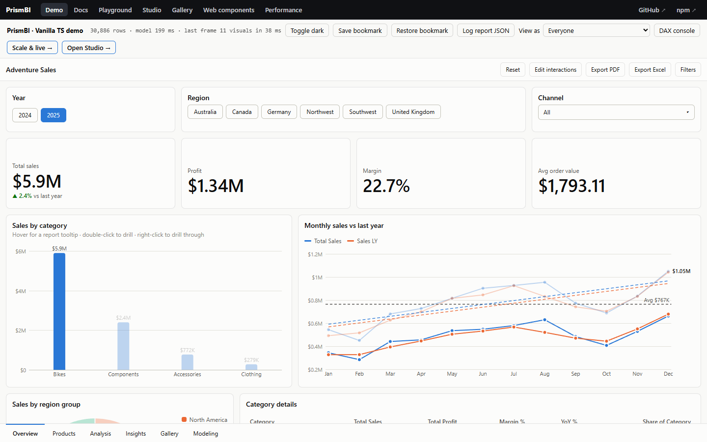
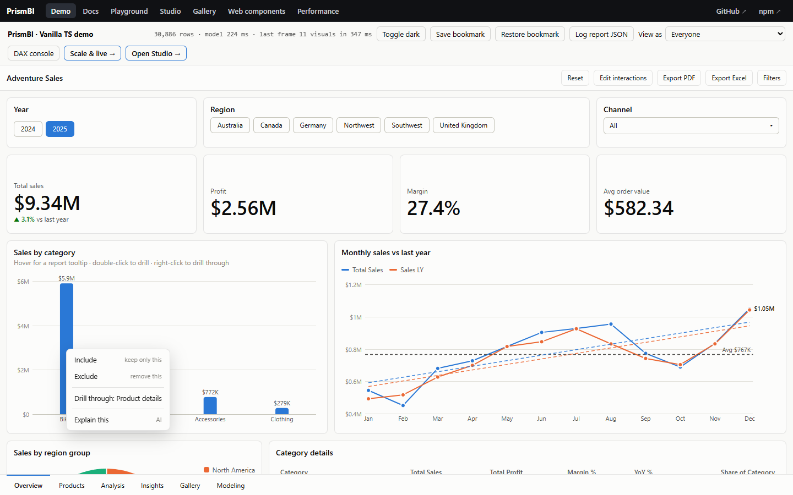
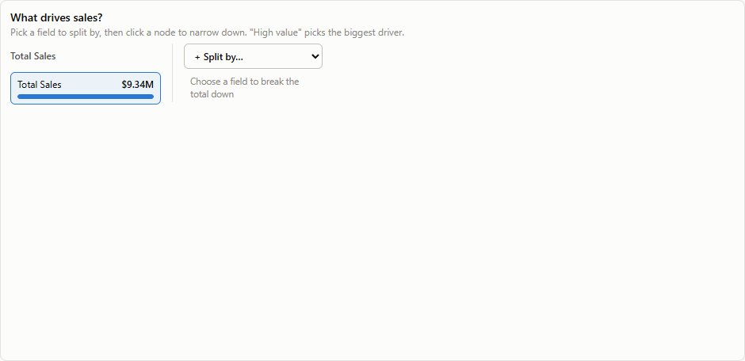
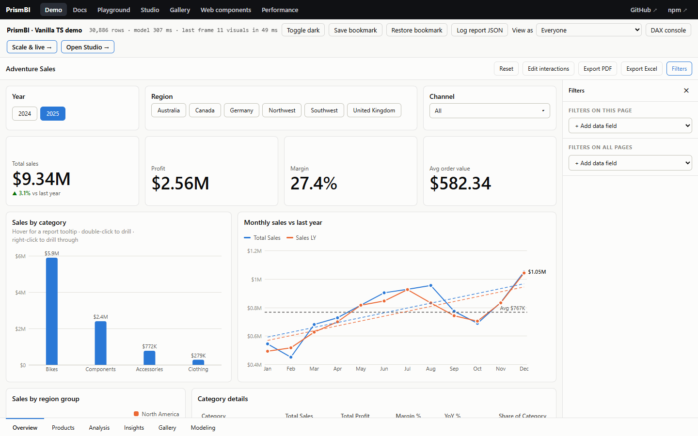

Slicing, filtering and interactions
PrismBI gives you every Power BI way of narrowing data down, and each one is scriptable.

| Mechanism | Scope | Set by |
|---|---|---|
| Report filters | all pages | filter pane, report.setReportFilters(), definition.filters |
| Page filters | one page | filter pane, report.setPageFilters(), page.filters |
| Visual filters | one visual | filter pane (click the visual first), report.setVisualFilters(), visual.filters |
| Slicers | other visuals on the page | user, report.setSlicerSelection() |
| Cross-filter / cross-highlight | other visuals on the page | clicking data points, legend entries or table rows |
| Drill | one visual | double-click a data point, or the header ↑ / ⇊ / ⤓ |
| Include / Exclude | one visual (becomes a visual filter) | right-click a data point |
| Drill-through | a target page | right-click a data point, report.drillThrough() |
| Decomposition tree | other visuals on the page | clicking nodes in the tree |
All of them compose with AND.
Slicers #
{ id: 'region', type: 'slicer', title: 'Region', fields: { field: 'Region[Name]' },
format: { slicer: { style: 'tiles', single: false } } }| Style | Best for | Behaviour |
|---|---|---|
list | text, few to hundreds of values | checkboxes, Select all, search once there are more than 7 values |
dropdown | saving space | the same list in a popover |
tiles | a handful of values | buttons. Click selects one value, Ctrl/⌘+click adds more (single: false makes every click add) |
between | numbers and dates (default for dates) | from/to inputs plus a dual-thumb slider |
relative | dates | Last, Next or This N days, weeks, months or years |
| tree | hierarchies (several fields) | tri-state checkboxes, expand/collapse, search. Emits an exact path filter, so "Road Bikes" under Bikes doesn't also match another category's "Road Bikes" |
A slicer filters every other visual on its page, but not itself. Its own list of values is narrowed by the other filters and slicers, so you get cascading slicers for free.
report.setSlicerSelection('region', [{ target: 'Region[Name]', op: 'in', values: ['North'] }]);
report.setSlicerSelection('region', null); // clearHierarchy slicer #
{ type: 'slicer', fields: { field: ['Product[Category]', 'Product[Subcategory]', 'Product[Name]'] } }Sync slicers across pages #
Slicers with the same syncGroup share one selection on every page, whatever their style:
{ type: 'slicer', fields: { field: 'Date[Year]' }, format: { slicer: { style: 'tiles', syncGroup: 'year' } } } // page 1
{ type: 'slicer', fields: { field: 'Date[Year]' }, format: { slicer: { style: 'dropdown', syncGroup: 'year' } } } // page 2Cross-filtering and cross-highlighting #
Clicking a data point selects it. Ctrl or ⌘ + click adds to the selection, clicking the same point again clears it, and clicking empty space or pressing Esc clears everything. Every other visual on the page reacts:
- highlight is the default for column, bar, line, area, pie, donut, treemap, funnel and scatter. They keep their full values faded and draw the selected portion solid.
- filter is the default for everything else. They re-query with the selection as a filter.
- none means the visual ignores selections.
{ type: 'line', interaction: 'filter', ... } // how this visual reacts
{ type: 'card', interactionsFrom: { 'by-category': 'none' }, ... } // per source visualThe source visual dims unselected marks. Clicking a legend entry selects the whole series. A table or matrix row selects its group values.
Drill down #
Put several fields in a drillable role to create a hierarchy:
fields: { category: ['Date[Year]', 'Date[Quarter]', 'Date[Month]'], values: 'Total Sales' }- Double-clicking a data point drills into that member. For example, 2025 shows that year's quarters.
- ↑ drills up a level.
- ⇊ Go to next level shows all members of the next level, without a parent filter.
-
A breadcrumb under the title shows the path, e.g.
Year: 2025 › Quarter: Q2.
report.visual('trend').drillDown(2025);
report.visual('trend').drillUp();
report.on('drill', (e) => console.log(e.level, e.path));Expand all down one level (header ⤓, or report.visual(id).expandAll()) shows two levels together, e.g. "Bikes · Road Bikes". Drill up collapses it again.
Right-click: Include, Exclude, Drill through #
Right-clicking any data point, table row or matrix row opens a menu:

- Include keeps only that data point in this visual. Exclude removes it. Both are added as visual-level filters, so they show in the filter pane and can be cleared there or with Clear visual filters.
-
Drill through: <page> appears for every page whose
drillthrough.fieldsmatch the data point. - Clear selection appears when something is selected.
Drill-through pages #
{
id: 'product-detail',
name: 'Product details',
hidden: true, // reachable only via drill-through
drillthrough: { fields: ['Product[Category]', 'Product[Name]'], keepAllFilters: true },
visuals: [ /* cards, trends, tables about one product */ ],
}Drilling through filters the target page to the data point's values for those fields. When keepAllFilters is on (the default), the target also gets the source visual's filters: slicers, page and visual filters, and the selection. A ← Back button appears in the toolbar, and the filter pane gets a "Drill through" section you can edit.
report.drillThrough('product-detail', [{ target: 'Product[Name]', op: 'eq', value: 'Road-150' }]);
report.back();
report.on('drillThrough', (e) => console.log(e.fromPageId, '→', e.toPageId, e.filters));Decomposition tree #

{ type: 'decompositionTree', fields: { values: 'Total Sales', explainBy: ['Product[Category]', 'Region[Group]', 'Sales[Channel]'] } }Pick a field to split the total by, click a node, and split that node by another field. Each step narrows the analysis, and the selected path cross-filters the rest of the page. High value (auto) and Low value (auto) pick the field whose biggest (or smallest) member stands out most.
Report tooltips #
Design a small page and mark it as a tooltip page. Any visual can then show it on hover, filtered to the hovered data point plus that visual's filters:
{ id: 'tip-cat', name: 'Category tooltip', tooltip: { width: 320, height: 210 }, layout: { columns: 2, rowHeight: 30 },
visuals: [ { type: 'card', fields: { value: 'Total Sales' }, layout: { x: 0, y: 0, w: 1, h: 2 } }, /* … */ ] }
{ type: 'clusteredColumn', fields: { … }, format: { tooltip: { page: 'tip-cat' } } }Tooltip pages never appear as tabs.
Edit interactions #
The Edit interactions toolbar button works like Power BI's. Click a visual, and every other visual shows Filter / Highlight / None, which sets how it reacts to selections in the visual you clicked. From code:
report.toggleEditInteractions(true);
report.setInteraction('by-category', 'kpi-card', 'none'); // stored as spec.interactionsFromThe filter pane #
Turn it on with chrome: { filterPane: true } (a toolbar toggle) or 'open'. It lists filter cards for this visual (the last one clicked), this page and all pages. Each card has three modes:

- Basic: tick values from the column's full domain, with search.
- Advanced: contains, does not contain, starts with, ends with, is, is not, >, ≥, <, ≤, is blank, is not blank.
- Top N: top or bottom N items, ranked by any measure.
Use + Add data field to add a card for any visible column. An empty card means "is (All)" and filters nothing.
Filter reference #
type FilterSpec =
| { target: 'Table[Col]', op: 'in' | 'notIn', values: CellValue[] }
| { target, op: 'eq' | 'neq' | 'gt' | 'gte' | 'lt' | 'lte', value }
| { target, op: 'between', min?, max? } // inclusive, open-ended allowed
| { target, op: 'contains' | 'notContains' | 'startsWith' | 'endsWith', value } // case-insensitive
| { target, op: 'isBlank' | 'isNotBlank' }
| { targets: ['T[a]', 'T[b]'], op: 'tuples', tuples: [[a1, b1], [a2, b2]], exclude?: true } // multi-column selections
| { target, op: 'topN', n: 5, by: 'Total Sales', direction?: 'top' | 'bottom' };Filters on a dimension column flow to related fact tables. Filters on a fact column don't flow back to dimensions (single-direction relationships).
Export #
-
Per visual: header ⇩ → CSV, Excel, PNG or SVG, plus Copy image: Clipboard. In code:
report.visual(id).exportCsv() / exportXlsx() / exportImage('png') / toSvg() / copyImage().copyImage()renders a 2× raster PNG and writes directly to the system clipboard vianavigator.clipboard.write(). -
Per page: toolbar Export PDF, or
await report.exportPdf({ pages: 'current' | 'all' }). Each report page becomes one PDF page. The PDF writer has no dependencies and only loads when used. -
PowerPoint presentation: toolbar Export PowerPoint, or
await report.exportPptx({ pages: 'current' | 'all' }). Packages each report page as an uncompressed OpenXML.pptxslide with vector SVG / high-res raster embeds. Zero external dependencies. -
Data to Excel: toolbar Export Excel, or
await report.exportXlsx({ pages: 'current' | 'all' }). Every visual with data becomes one sheet, in reading order (top to bottom, then left to right), named after its title, withPage - Titlenames when exporting all pages. Cells keep their types: numbers, dates and booleans, not text. Measure and column format strings become Excel number formats, and the header row is bold, frozen and filterable.toXlsx()returns the bytes instead of downloading, on the report and on each visual. -
Your own workbooks & presentations:
buildXlsx(sheets)writes any{ name, columns: [{ header, format, width }], rows }sheets, andbuildPptx(slides)packages OpenXML presentation decks. Like the PDF writer they have zero dependencies.
import { buildXlsx, resultToSheet } from '@prismbi/prismbi';
const sheet = resultToSheet(model.query({ groupBy: ['Region[Group]'], values: ['Total Sales', 'Orders'], totals: true }), 'By group');
const bytes = buildXlsx([sheet]); // new Blob([bytes], { type: XLSX_MIME }) to download
return { columns: sheet.columns, rows: sheet.rows, bytes: bytes.length };Bookmarks #
A bookmark captures the current page, report and page filters, every slicer, the selection and drill states.
const bm = report.captureBookmark('West, last 6 months');
report.applyBookmark(bm); // or by name
report.bookmarkList();
report.on('bookmarkApplied', (e) => ...);Bookmarks are included in report.toJSON().
Programmatic control #
report.goToPage('Details');
report.setReportFilters([{ target: 'Date[Year]', op: 'eq', value: 2025 }]);
report.setPageFilters('overview', [{ target: 'Products[Category]', op: 'notIn', values: ['Accessories'] }]);
report.setVisualFilters('top-products', [{ target: 'Products[Name]', op: 'topN', n: 10, by: 'Total Sales' }]);
report.getFilters(); // { report, page, slicers }
report.clearSelection();
report.reset(); // clear slicers, selection and drill on the current pageKeyboard #
Everything that works with a mouse also works from the keyboard:
| Where | Keys |
|---|---|
| Data points | Each visual is one Tab stop: the last data point you focused, or the first. Arrow keys move between points, and Home / End jump to the ends. Enter or Space selects (Ctrl adds to the selection). Shift+F10 or the context-menu key opens the right-click menu. |
| Context menu | Up / Down, Home / End, Enter. Escape or Tab closes it, and focus goes back to the data point. |
| Page tabs | One Tab stop (the current page). Left / Right, Home / End switch pages. |
| Report | Escape clears the selection, or leaves focus mode. |
| Table headers | Enter or Space sorts. |
| Edit mode | Focus a visual to select it. Arrow keys move it one grid cell (with the rest of the selection), and Shift+arrows resize it. |
Data points show their tooltip on focus, and every chart has a plain-language description for screen readers (see describe()).
Events #
| Event | Payload |
|---|---|
selectionChanged | { pageId, visualId, identities, filters } |
filtersChanged | { pageId, scope: 'report'|'page'|'visual'|'slicer', visualId?, filters } |
dataPointClick | { visualId, keys, identity, event } |
drill | { visualId, level, path } |
pageChanged | { pageId, name } |
rendered | { visualId, ms } |
error | { visualId, error } |
drillThrough | { fromPageId, toPageId, visualId?, filters } |
themeChanged, bookmarkApplied | { name } |
const off = report.on('dataPointClick', ({ keys }) => router.push(`/category/${keys[0]}`));
off();Usage analytics #
onUsage gets one record per page view (including the first) and per interaction, ready for any analytics sink:
new Report(el, { model, pages, onUsage: (e) => analytics.track(e.type, e) });
// { type: 'interaction', action: 'filter', report: 'Sales', pageId, page: 'Overview', visualId: 'region', at, detail: { scope, filters } }Actions are select, drill, drillThrough, filter and bookmark. A handler that throws is logged and doesn't break the report.
Conditional visibility #
visibleWhen shows a visual only when a condition holds. It's evaluated against the filters reaching that visual (slicers, selections, page and report filters), so it updates as viewers interact:
{ type: 'table', fields: { /* … */ }, visibleWhen: { field: 'Product[Category]' } } // once a category is picked
{ type: 'card', fields: { /* … */ }, visibleWhen: { field: 'Region[Country]', is: ['Canada'] } } // only for Canada
{ type: 'textbox', format: { /* … */ }, visibleWhen: { field: 'Product[Category]', is: 'notSelected' } } // a "pick a category" hint
{ type: 'card', fields: { /* … */ }, visibleWhen: { roles: ['Managers'] } } // only for an active RLS rolefield and roles combine (both must hold). Hidden visuals don't run queries. In edit mode every visual stays visible, so authors can still lay them out. report.isVisualVisible(id) tells you the current state.
Try it #
A slicer and two charts that filter each other. Click a bar or pick a year:
import { Report } from '@prismbi/prismbi';
const report = new Report(el, {
model,
chrome: { toolbar: false },
pages: [{
name: 'Sales',
visuals: [
{ id: 'year', type: 'slicer', layout: { x: 0, y: 0, w: 3, h: 6 }, fields: { field: 'Date[Year]' } },
{ id: 'cat', type: 'clusteredBar', title: 'By category', layout: { x: 3, y: 0, w: 9, h: 6 }, fields: { category: 'Product[Category]', values: 'Total Sales' } },
{ id: 'trend', type: 'line', title: 'By month', layout: { x: 0, y: 6, w: 12, h: 6 }, fields: { category: 'Date[MonthYear]', values: 'Total Sales' } },
],
}],
});
report.on('selectionChanged', (e) => console.log('filters', e.filters));
return report;On the docs site (npm run docs), ▶ Run in playground opens it in an editor next to its output.